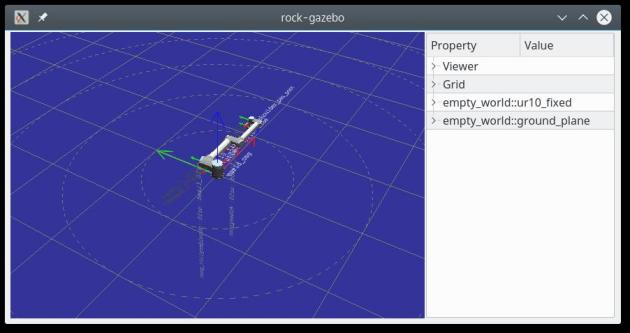
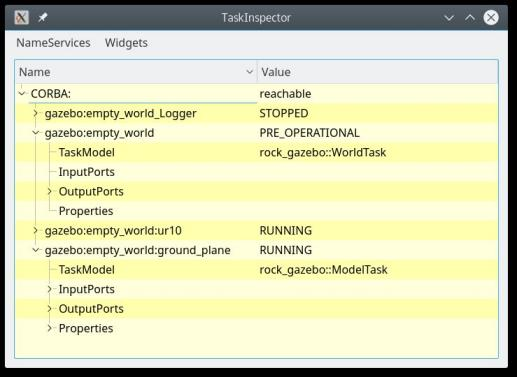

Getting Started
- Bundles and bundles' file structure
- Robot and Scene description using SDF
- Running and visualizing a Gazebo environment
- Preparing the
gazeboSyskit configuration
We'll be getting right into the meat of things by creating a system's
integration package (a bundle), and setup a gazebo environment that will
allow us to continue with actually doing something with the system.
Bundles and bundles' file structure
In Rock, the central place where the system design and integration happens is a
bundle. A bundle package is created in the bundles/ folder of your Rock
workspace. For the time being, you can see bundles as a collection of
Syskit models (in models/), configuration files (in config/), SDF scenes
(scenes/) and SDF models (models/sdf/).
The following assumes that you have a bootstrapped Rock
installation, and that you have a terminal in which this
installation's env.sh file has been sourced.
Let's create a new bundle. In your Rock's workspace do
acd
cd bundles
syskit gen app syskit_basics
cd syskit_basics
This creates a Roby application, Roby being the underlying application framework
and execution engine that Syskit is based on. In addition, it loads and sets up
Syskit in the applications config/init.rb.
We can now verify that the generated application loads with
$ syskit run
Bundles[INFO]: Active bundles: syskit_basics
default[INFO]: logs are in /home/doudou/dev/logs_area/syskit_basics/20170609-1609
default[INFO]: loaded Roby on ruby 2.3.1p112 (2016-04-26 revision 54768) [x86_64-linux]
default[INFO]: done initialization
default[INFO]: ready
Either hit CTRL+C, or run syskit quit in another terminal, to make it exit.
$ syskit quit
Bundles[INFO]: Active bundles: syskit_basics
default[INFO]: connected
default[INFO]: waiting for remote app to terminate
default[INFO]: closed communication
Robot and Scene description using SDF
The Scene Description Format is a XML format defined by the Gazebo developers to describe both scenes and objects in these scenes (as e.g. robots). We're going to learn how to leverage the information present in an SDF file as possible, with the goal of having the SDF be the authoritative information source for any information that can be represented in it.
But for now, let's get to create ourselves a scene with a robot in it. We will not describe the SDF format in details, there's a lot of Gazebo-related documentation about that, including a reference of the format on sdformat.org
SDF scenes are made of models. Loosely-speaking, each model represents one
object in the scene. Moreover, models can be included in scenes through the
<include> tags, allowing to reuse models in different scenes. In general,
your robot should at least be described in a separate model to allow you to
reuse it in different simulation scenes.
For the purpose of this part of the documentation, we'll use Gazebo's UR10 arm model as our robot. We however need to integrate it in another model so that its base is fixed (using this method).
Usually, the first scene one creates is an empty one, which later will give us an environment in which to test basic functionality, without having to care about collisions.
In the bundles, scenes are saved in scenes/SCENE_NAME/SCENE_NAME.world, e.g.
scenes/empty_world/empty_world.world:
<?xml version="1.0"?>
<sdf version="1.6">
<world name="empty_world">
<model name="ur10_fixed">
<include>
<name>ur10</name>
<uri>model://ur10</uri>
</include>
<joint name="attached_to_ground" type="fixed">
<parent>world</parent>
<child>ur10::base</child>
</joint>
</model>
<include>
<uri>model://ground_plane</uri>
</include>
</world>
</sdf>
Running and visualizing a Gazebo environment
Rock offers vizkit3d, its own 3D visualization environment. Since we will
definitely want to augment the visualization of the world with e.g. algorithm
feedback and/or sensor data, we'll be using this environment for the Gazebo
world as well, instead of using Gazebo's client.
The rock-gazebo tool starts a Vizkit3D visualization for the Gazebo scene.
rock-gazebo empty_world
Starts both a Gazebo simulation and displays it:

The ur10 and ground_plane models we are referencing in this world file need
to be downloaded from Gazebo's model repository. This is done automatically by
rock-gazebo the first time they're needed, but can also be done explicitly with
the --download-only option, e.g.
rock-gazebo --download-only empty_world
Preparing the gazebo Syskit configuration
Syskit configuration in bundles may be split into multiple configurations /
environments called "robots". A common organization is to create one bundle
per robot type or project, and create two robot configuration in it, one for
the simulation (gazebo) and one for the live system (live).
Let's create the gazebo configuration:
$ syskit gen robot gazebo
Bundles[INFO]: Active bundles: syskit_basics
exists config/robots
create config/robots/gazebo.rb
In order to setup Syskit to use the Gazebo instance, we first have to require
integration code and then load the environment. This is done by modifying the
newly-created config/robots/gazebo.rb configuration file to add:
Robot.init do
Roby.app.register_app '../common_models'
require 'rock_gazebo/syskit'
Conf.syskit.transformer_enabled = true
end
Robot.requires do
Syskit.conf.use_gazebo_world('empty_world')
end
Most Syskit commands accepts take a -r option followed by a name. This tells Syskit
which configuration file should be loaded within config/robots/ and only this.
For instance, starting Syskit with the Gazebo configuration about is done with
syskit run -rgazebo.
Advanced Under the hood: how does the Rock/Gazebo bridge work
Under the hood, the objects in the Gazebo instance are exposed to the Rock
system by means of a Gazebo system
plugin. Each model, link,
sensor and some plugins are exposed this way. The plugin is implemented in the
simulation/rock_gazebo package. The components
that implement this interface are implemented in the
simulation/orogen/rock_gazebo package,
and are being run within the Gazebo process itself, synchronously with the
Gazebo simulation loop. The rock-gazebo and rock-gzserver tools are simple
shell wrappers around the gazebo and gzserver commands, but with the
addition of the system plugin.
The task contexts in our scene can be visualized with rock-display:

rock-gazebo-viz sets up the visualization to match the data in the SDF file and
then listen to pose updates from the rock_gazebo::ModelTask components exposed by the
Gazebo process. Given that this data is only output if the components are running,
rock-gazebo-viz starts them automatically. Use --no-start to avoid this.